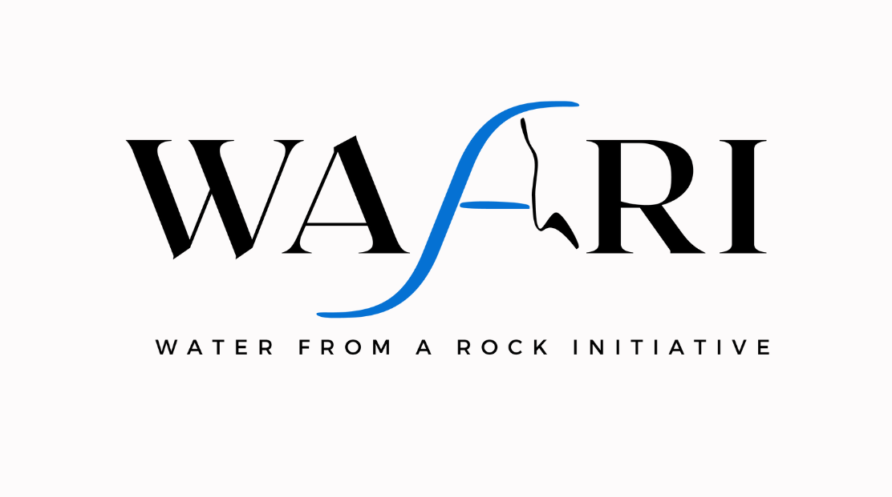
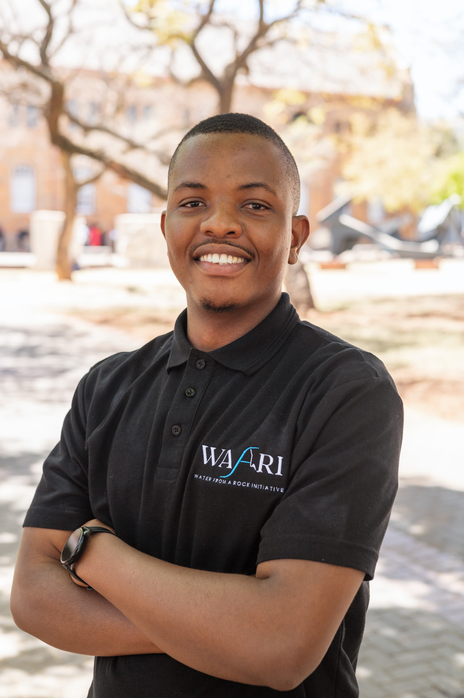
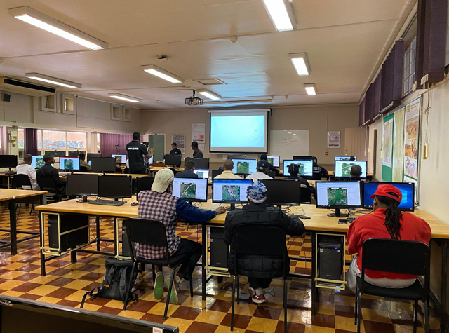
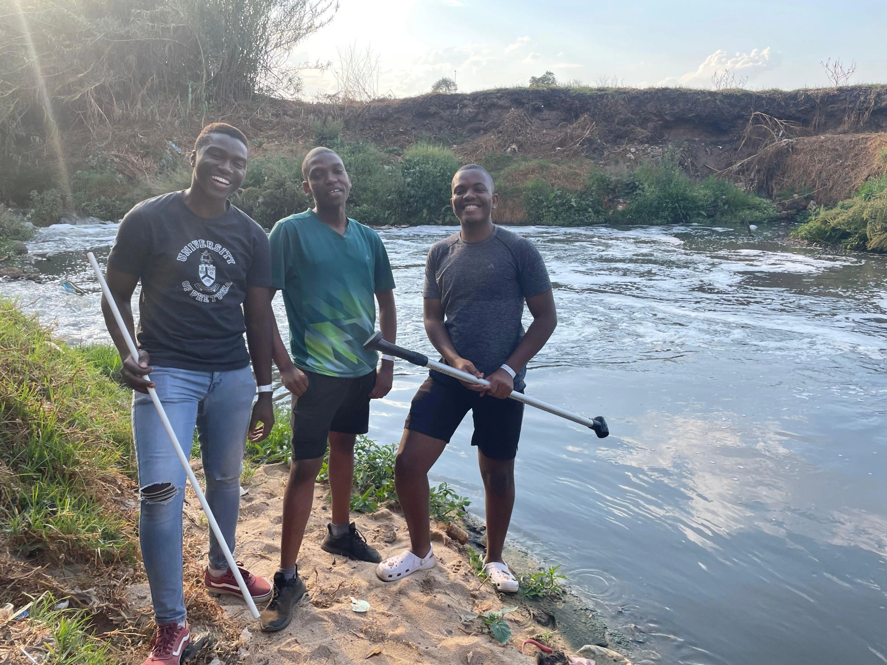
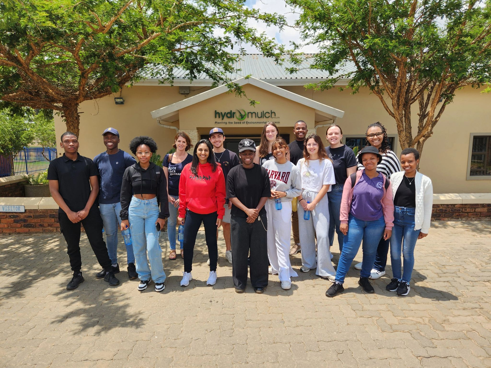
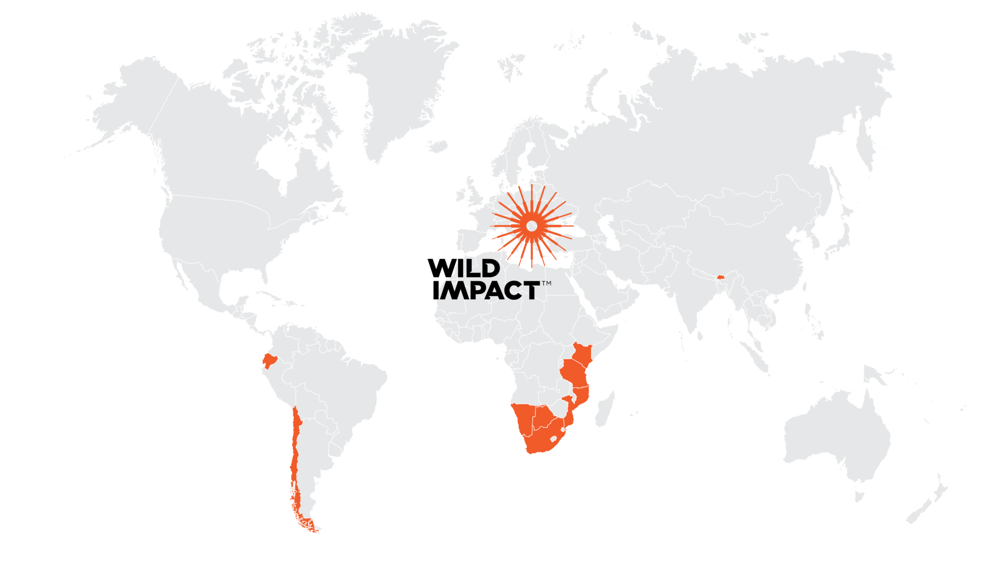

2023 – Present
🏆 2023 Youth Changemaker Award
Youth-led flood resilience and disaster preparedness programme operating across Africa.
WAFARI
Global Water Partnership · Water Youth Network · WMO
WAFARI bridges the gap between climate science and community-level action - translating flood risk data into practical preparedness tools for vulnerable African communities.
- Leadership: Co-designed and led flood awareness workshops and survey campaigns across South Africa and beyond, as part of the Disaster Awareness Team.
- Pan-African data collection: Conducted surveys across multiple African countries, building a unique dataset to inform youth-led climate action.
- Campus mobilisation: Organised university-based flood awareness drives using GIS demos, visual tools, and personal storytelling.
- Award recognition: Recipient of the 2023 Youth Changemaker Award from Global Water Partnership, WMO, and Water Youth Network.
- Evidence-based action: Used survey findings to design localised preparedness strategies grounded in real community needs.



Selected to attend the Gordon Institute of Business Science Experience Day at the University of Pretoria. Engaged with senior professionals through classroom simulations, career talks, and strategic leadership workshops - deepening my understanding of how environmental expertise translates into business and policy environments.

Co-organised a humanitarian mapathon at the University of Pretoria's Department of Geography, Geoinformatics and Meteorology following the devastating Tongaat tornado (June 2024). Using the HOT Tasking Manager and OpenStreetMap, participants across Africa mapped roads, buildings, and water pathways to support displaced communities and improve disaster response coordination.

Led final-year hydrological fieldwork at Olifantspruit under the University of Pretoria's Faculty of Natural and Agricultural Sciences. Using velocity gauges and cross-sectional area measurements, our team collected and analysed streamflow data to model catchment discharge dynamics - strengthening skills in environmental data collection, field analysis, and collaborative research.

Visited Hydromulch to explore cutting-edge erosion control technologies applied across agriculture and construction. The experience provided practical insight into sustainable land management and how industry-scale solutions can address soil degradation - directly connecting environmental science theory to real-world application.
Completed a remote internship with Kartoza, a leading open-source geospatial consultancy. Gained professional experience working with QGIS, spatial databases, and collaborative GIS workflows - applying spatial analysis to real-world environmental and planning challenges while developing skills in remote, team-based technical environments.

Working as a Biodiversity Monitoring Intern at Wild Impact, using Trap Tagger to process and interpret wildlife camera data. The role strengthens skills in ecological data management, species identification, and conservation decision-support - contributing directly to evidence-based wildlife protection strategies across Southern Africa.